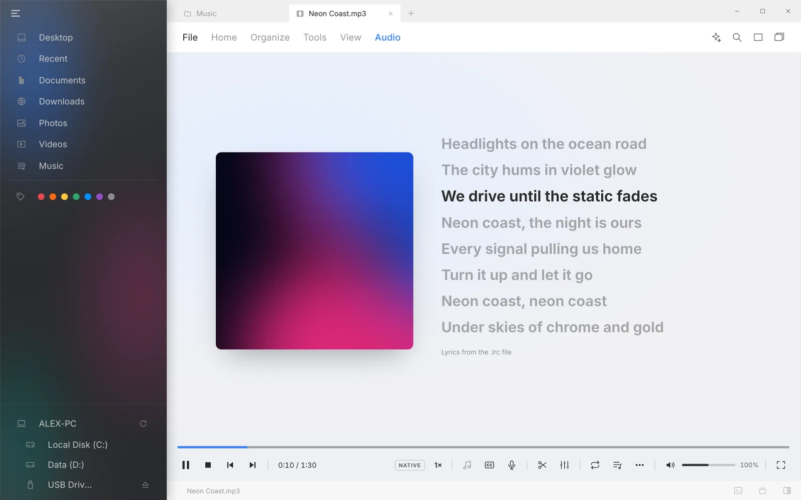
Dogfile Player for music
Synced lyrics from .lrc files, an equalizer, speed control, and a queue made from the folder you’re in.
Tabs, split panes, instant search, an AI Assistant and built-in apps for documents, photos, music, video and 3D models.
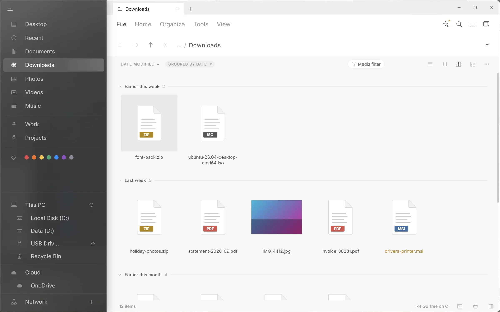
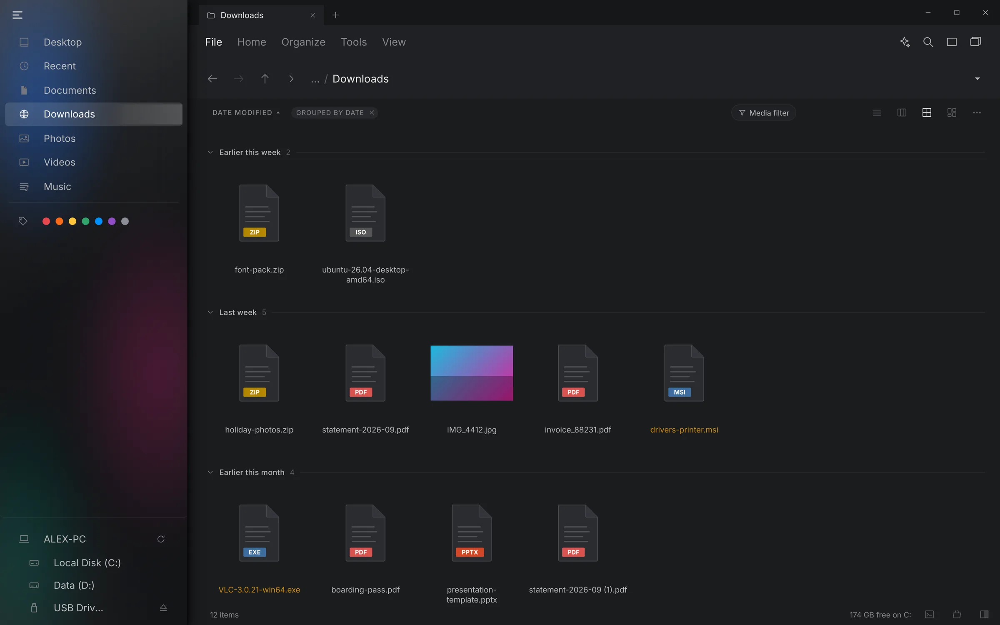
Drag a tab to the edge of the window to split it.
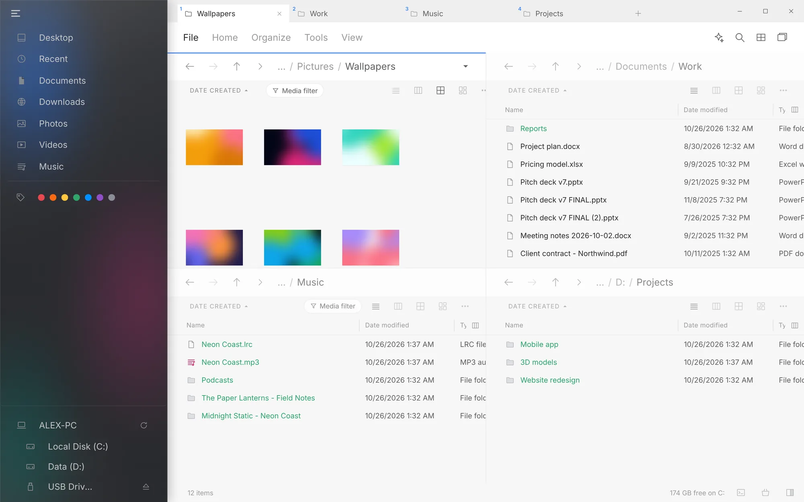
Works for photos, PDFs, Office documents, video, audio, code and archives.
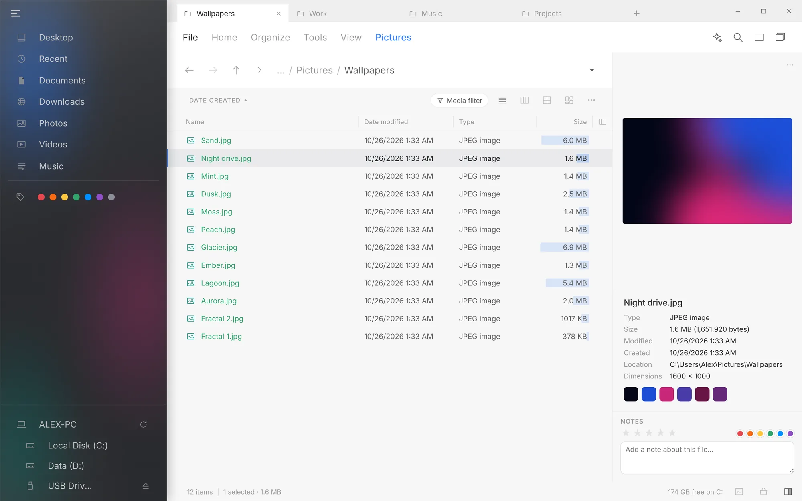
Word, Excel, PowerPoint and PDF files open in a tab and can be edited and saved. Microsoft Office doesn’t need to be installed.
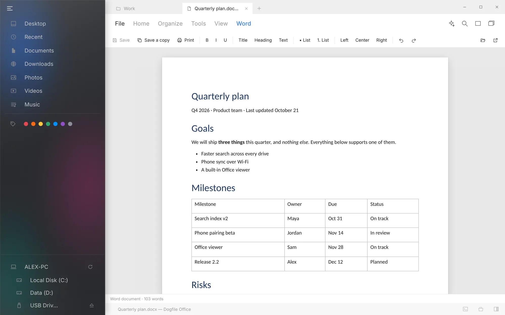
Do something once and Dogfile writes down the steps. Replay them with a click, a shortcut, on a schedule, or when new files land in a folder.
Every step can be edited, reordered or removed afterward.
Dogfile finds the due or expiry date in your bills, contracts, warranties and IDs, then sends a Windows notification before the day comes.
Point it at a folder and new documents are picked up on their own. Nothing leaves your PC.

Synced lyrics from .lrc files, an equalizer, speed control, and a queue made from the folder you’re in.
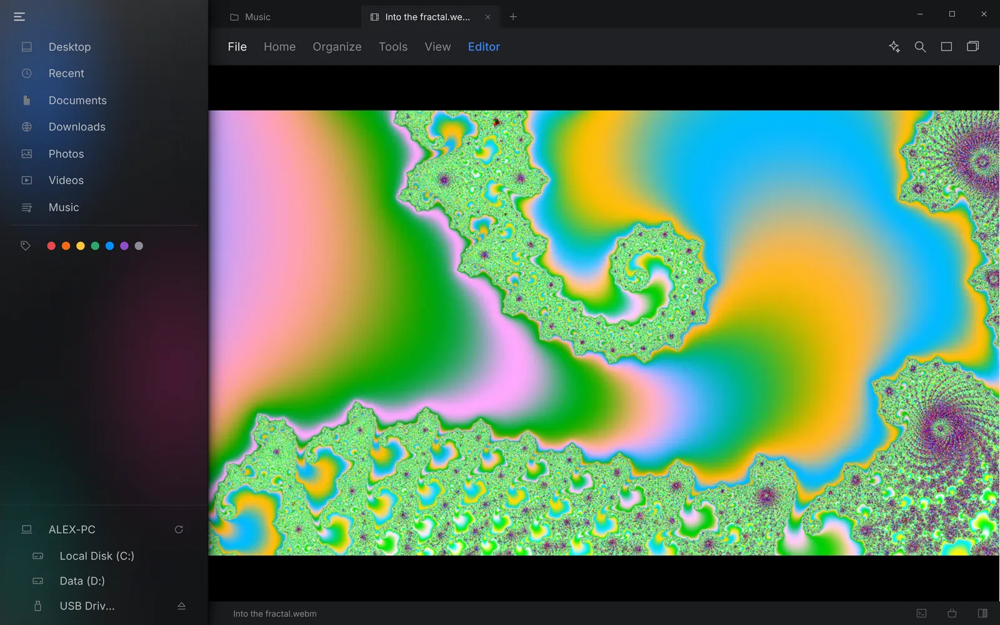
Plays almost any video file, with subtitles, chapters, frame stepping, screenshots and a trim tool.
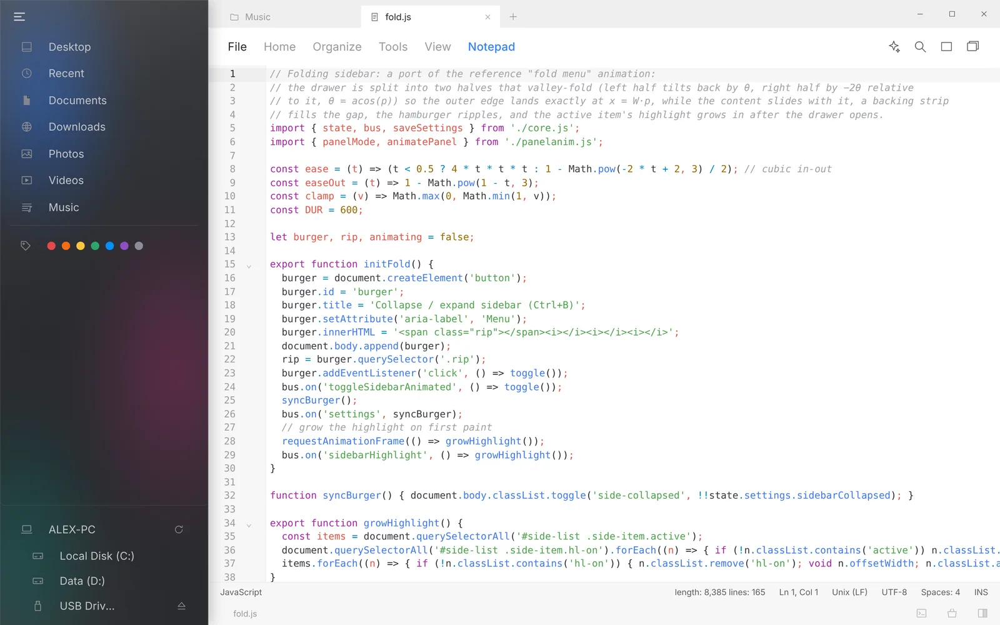
Syntax highlighting for dozens of languages, find and replace, and Markdown preview.
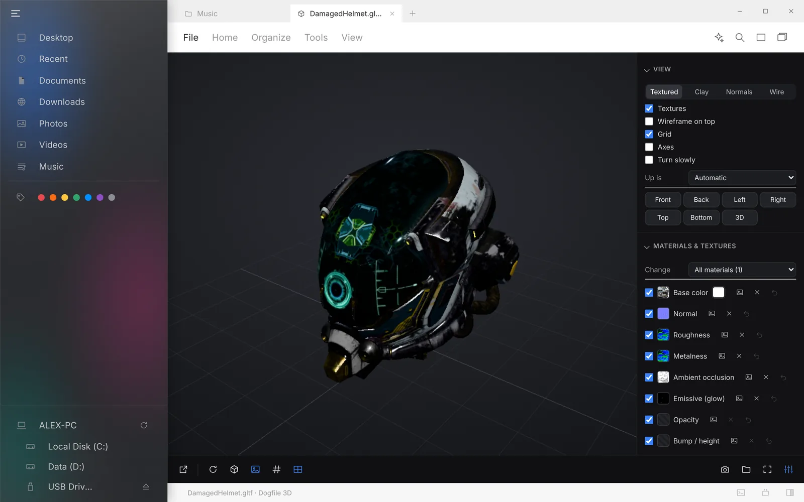
Textured, clay, normals and wireframe views. Swap materials and inspect each texture.
Also built in: Dogfile Photos, for viewing and editing pictures.
Ctrl ` opens it in the folder you’re looking at.
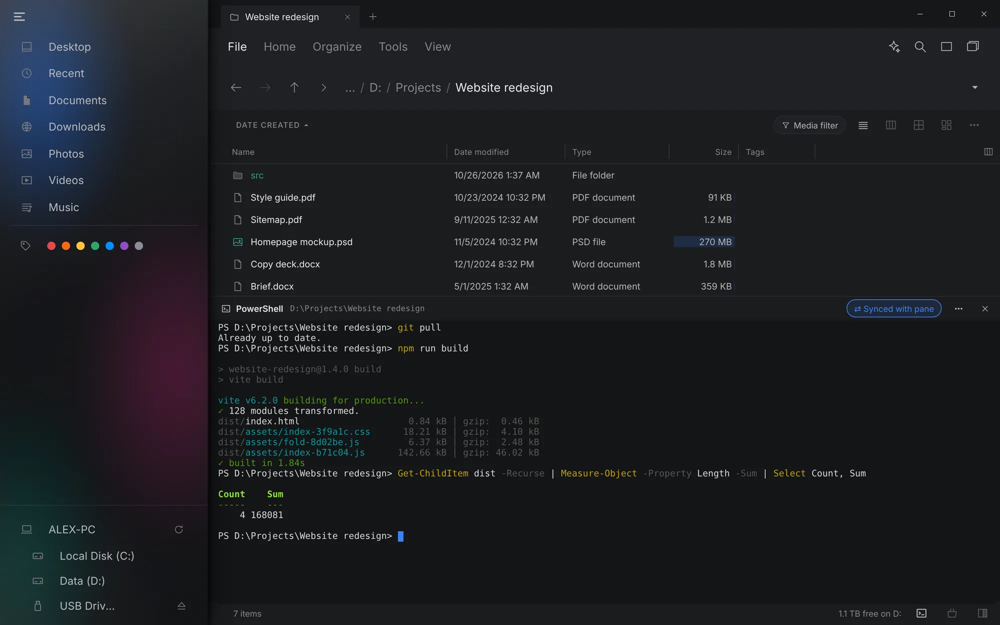
Ask for files in plain words: “PDFs from this month.” “Group these by type.” “Files I haven’t opened in six months.” It shows what it understood and asks before changing anything big.
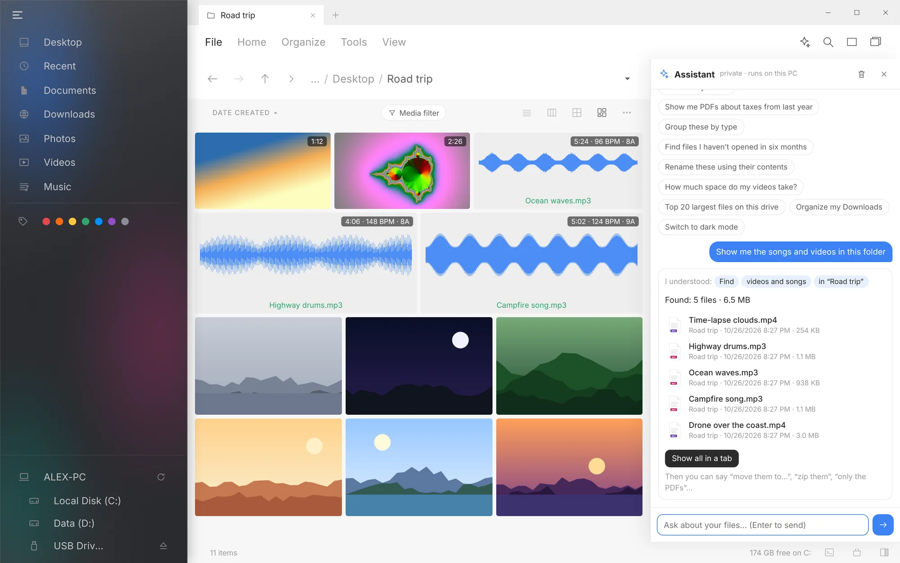
Add your own commands to Dogfile with a few lines of JavaScript, written in Dogfile Notepad and installed with one click.
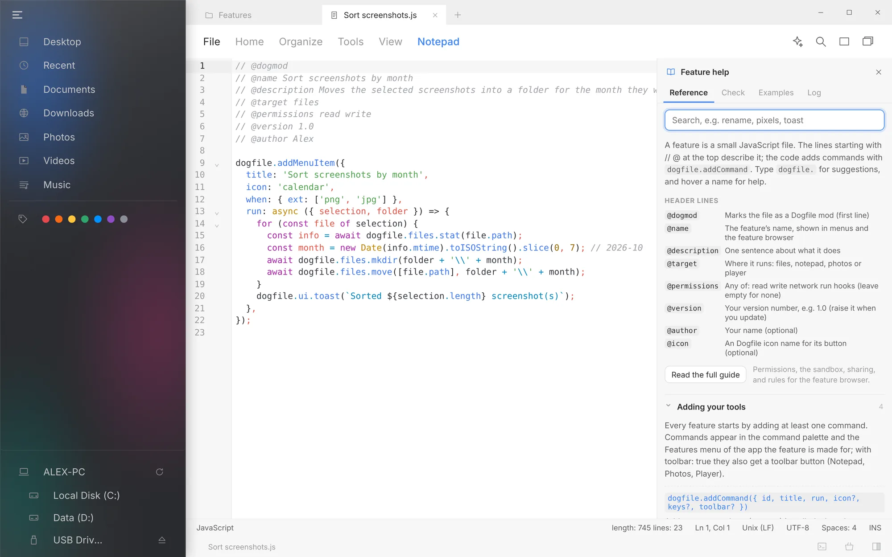
Hundreds of color combinations to make the browser your own.
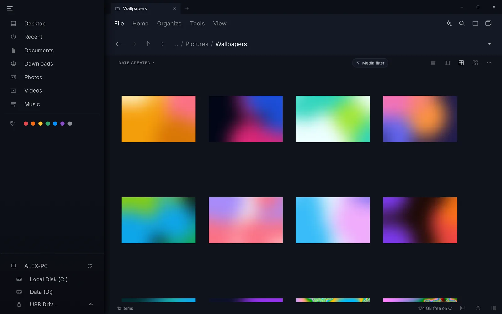
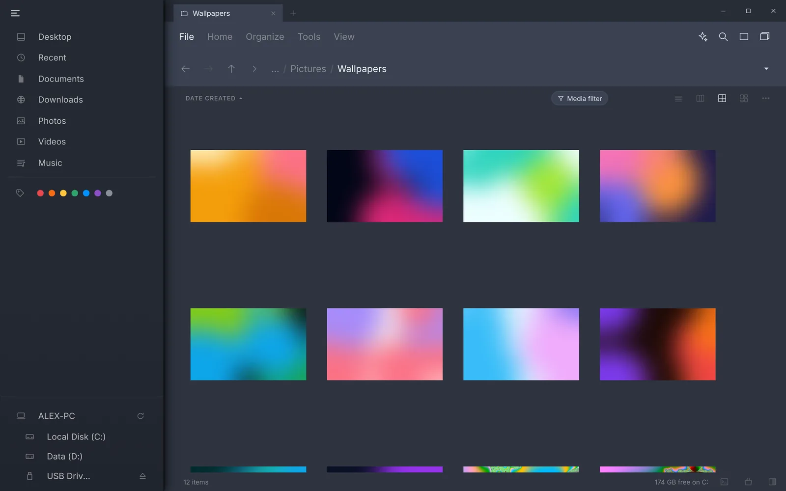
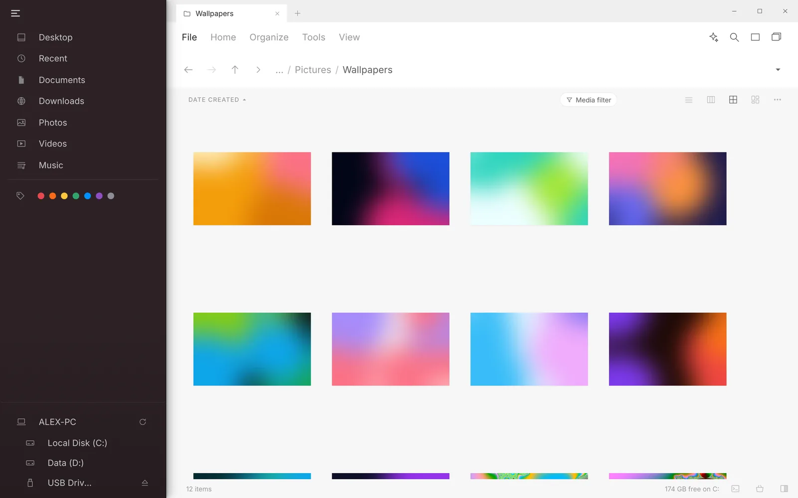
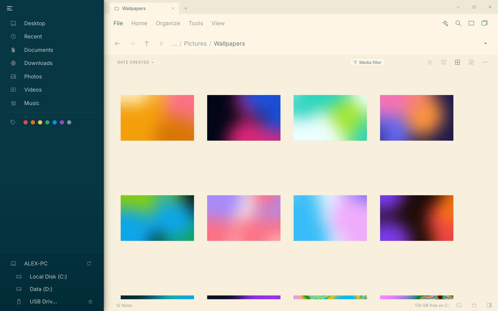
Cool animations that suit you!
| Feature | Dogfile | Directory Opus | OneCommander | Total Commander |
|---|---|---|---|---|
| Edit Word, Excel and PowerPoint files | Yes | No | No | No |
| Music player with synced lyrics | Yes | No | No | No |
| 3D model viewer with materials and textures | Yes | No | No | No |
| AI assistant that runs on your PC | YesPro | No | No | No |
| Macro recorderRecords what you do and replays it | YesPro | No | No | No |
| Terminal inside the window, synced with the folderTotal Commander has a one-line command box | Yes | No | No | No |
| Three or four panes side by sideThe others have two | YesPro | No | No | No |
| Add-ons you can write yourselfDirectory Opus has scripting, Total Commander has plugins | YesPro | Yes | No | Yes |
| Free version for home useDirectory Opus and Total Commander are paid after a trial | Yes | No | Yes | No |
Built-in features only, from each product’s own website, October 2026. Something out of date? Let us know.
Try Pro free for 14 days inside the app. No card needed.
No ads · No account
Works on 2 PCs · Updates included